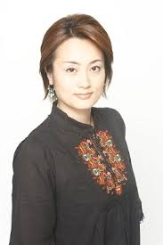
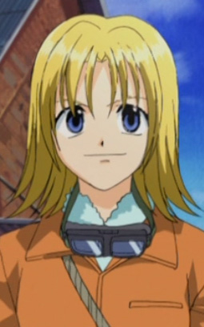

Chiharu Tezuka is a Japanese voice actress who works for Art Vision. She voiced in Serial Experiments Lain.
- Gender: Female
- Birthday: October 27, 1974
- Hometown: Tokyo, Japan
- Hobbies: Watching Baseball
| |
Chiharu Tezuka is a Japanese voice actress who works for Art Vision. She voiced in Serial Experiments Lain.
|
 |
|---|
|  | Hole | Rave Master | Hole is a woman who hates Demon Card, and helps people in and out underground tunnels. |